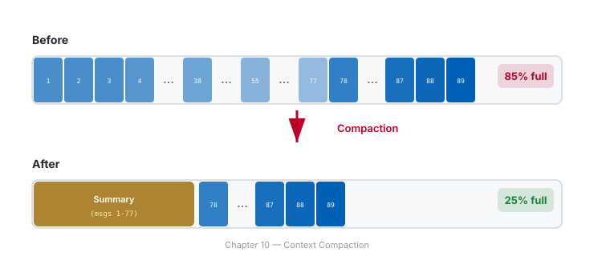

Chapter 10: Sessions & Memory — Pick Up Where You Left Off #
"The palest ink is better than the best memory."
— Chinese Proverb
📖 Estimated read time: 20 minutes
What You'll Learn #
- How NeamCode automatically saves your work sessions
- How to resume, name, and organize sessions
- How checkpoints protect you from mistakes
- How to use
/rewindto undo destructive operations - How context compaction keeps long conversations usable
- How to export conversations for sharing and archiving
10.1 Auto-Save Sessions #
Every conversation you have with NeamCode is automatically saved. You don't need to do anything — it just happens.
Every message, every file read, every command is recorded. Close the terminal and come back tomorrow — your work is still there.
Sessions capture:
- The full conversation history (your messages and NeamCode's responses)
- Which files were read and modified
- Which mode you were in
- Context and token usage at each point
- Checkpoints created during the session
- The working directory and project
When you close NeamCode or start a new session, the previous one is saved automatically. No save button, no export step, no "are you sure?" dialog.
neamcode> exit
Session saved automatically.
47 messages, 3 files modified.
Resume anytime with: neamcode --continue📝 Note: Sessions are stored locally on your machine. They are never sent to the cloud or shared with anyone unless you explicitly export and share them.
10.2 Resuming Work #
There are two ways to pick up where you left off.
Method 1: The --continue Flag #
When you launch NeamCode, add --continue to resume your most recent session:
$ neamcode --continue
✓ Resumed session "api-refactor" (47 messages)
Last context: We were refactoring the /users endpoint to use
the new pagination middleware. I had just suggested changes
to src/api/routes.ts.
neamcode> Right, let's continue with the pagination changes.This is the quickest way to resume. It grabs the last session you were working in, regardless of project.
Method 2: The /resume Command #
For more control, use /resume inside NeamCode to browse and select from all saved sessions:
neamcode> /resume
Saved Sessions
══════════════
# Name Project Last Active
1 api-refactor ~/projects/myapp 2 hours ago
2 fix-auth-bug ~/projects/myapp Yesterday
3 neam-agent-setup ~/projects/neam 3 days ago
4 unnamed-session-0412 ~/projects/blog 1 week ago
5 deploy-staging ~/projects/myapp 2 weeks ago
Enter number or name to resume: 2
✓ Resumed session "fix-auth-bug" (23 messages)
Mode: Debug (restored from session)
Last context: We identified a race condition in the auth
middleware. I suggested adding a mutex lock.You can also resume by name directly:
neamcode> /resume neam-agent-setup
✓ Resumed session "neam-agent-setup"💡 Tip: If you work on multiple projects, /resume is better than --continue because it shows you all sessions across all projects.
What Gets Restored #
When you resume a session, NeamCode restores:
- The full conversation (or its compacted summary if it was large)
- Your active mode (Debug, Explore, etc.)
- The working directory context
- Any MEMORY.md entries relevant to the project
What it does NOT restore:
- File contents that have changed since the session was saved (it re-reads files)
- MCP server connections (these are re-established on demand)
- Running background tasks
10.3 Naming Sessions #
Unnamed sessions get auto-generated names like unnamed-session-0412. These are hard to find later. Name your sessions.
Name When You Start #
$ neamcode --session "payment-refactor"
✓ Started session "payment-refactor"Name During the Session #
neamcode> /rename payment-refactor
✓ Session renamed to "payment-refactor"Naming Conventions That Work #
Good session names describe the task, not the date:
Good names:
fix-auth-race-condition
add-stripe-webhooks
explore-legacy-codebase
deploy-v2.1-staging
test-coverage-push
Bad names:
tuesday-work
session-3
stuff
temp💡 Tip: Name your session as soon as you know what you're working on. A 2-second /rename saves you 30 seconds of scanning unnamed sessions later.
10.4 Checkpoints — Your Safety Net #
Checkpoints are snapshots of your project's state at a specific moment. NeamCode creates them automatically before any destructive operation.
When Checkpoints Are Created #
- Before editing a file
- Before deleting a file
- Before running git commands
- Before running shell commands that modify files
- Before
/clear - Before applying multi-file refactors
You don't need to create checkpoints manually. NeamCode handles it.
Viewing Checkpoints #
neamcode> /rewind
Available Checkpoints
═════════════════════
# Time Action
7 2 minutes ago Edited src/api/routes.ts
6 5 minutes ago Edited src/models/user.ts
5 12 minutes ago Ran: npm install stripe
4 20 minutes ago Edited package.json
3 35 minutes ago Deleted src/old-auth.ts
2 1 hour ago Edited src/middleware/auth.ts
1 1 hour ago Edited .env.example
Enter checkpoint number to rewind, or 'cancel':What Checkpoints Capture #
A checkpoint records the state of all files that were about to be modified. Think of it as a mini git stash created automatically:
Checkpoint #7
├── src/api/routes.ts (before edit)
├── Conversation state at that point
└── Timestamp: 2026-03-07 14:23:05📝 Note: Checkpoints are separate from git commits. They exist within NeamCode's session system and don't affect your git history.
10.5 The /rewind Command #
/rewind is your undo button. It restores files to their state at a specific checkpoint.
Basic Rewind #
neamcode> /rewind 6
Rewinding to checkpoint #6...
═════════════════════════════
Restoring: src/api/routes.ts
── Reverting changes from checkpoint #7
✓ Rewound to checkpoint #6
1 file restored
Changes since checkpoint #6 have been undone.
The conversation is aware of the rewind.Rewind to the Last Checkpoint #
neamcode> /rewind last
Rewinding to checkpoint #7...
═════════════════════════════
Restoring: src/api/routes.ts
── Reverting to pre-edit state
✓ Rewound to checkpoint #7
1 file restoredThe Safety of Rewind #
/rewind is itself safe — it creates a checkpoint before rewinding:
neamcode> /rewind 3
⚠ This will undo changes from checkpoints #4 through #7.
Affected files:
- src/api/routes.ts
- src/models/user.ts
- package.json
A new checkpoint (#8) will be created before rewinding.
Continue? (y/n) y
✓ Checkpoint #8 created (safety net)
✓ Rewound to checkpoint #3
3 files restoredSo if you rewind too far, you can rewind the rewind. It's safety nets all the way down.
Real-World Rewind Scenario #
neamcode> Refactor the auth module to use JWT instead of sessions
I'll update the following files:
• src/middleware/auth.ts
• src/config/auth.ts
• src/routes/login.ts
• src/routes/logout.ts
✓ Checkpoint #12 created
✓ Updated 4 files
neamcode> Actually, the team decided to keep sessions. Undo everything.
neamcode> /rewind 12
Rewinding to checkpoint #12...
✓ 4 files restored to their pre-refactor state.
It's as if the JWT refactor never happened.⚠️ Warning: /rewind restores file contents but cannot undo external side effects. If NeamCode ran npm install or git push, those actions cannot be reversed by rewind. NeamCode will warn you about this.
10.6 Context Compaction #
Every message in your conversation uses tokens. As conversations grow long, you approach the model's context limit. Context compaction solves this.
How Compaction Works #

┌──────────────────────────────────────────────────────┐
│ CONTEXT COMPACTION │
│ │
│ Before compaction: │
│ ┌─────────────────────────────────────────┐ │
│ │ msg 1 │ msg 2 │ msg 3 │ ... │ msg 89 │ 85% │
│ └─────────────────────────────────────────┘ │
│ │
│ After compaction: │
│ ┌───────────────┬─────────────────────────┐ │
│ │ Summary │ msg 78 │ ... │ msg 89 │ 25% │
│ │ (msgs 1-77) │ (recent messages) │ │
│ └───────────────┴─────────────────────────┘ │
│ │
│ Older messages → compressed into a summary │
│ Recent messages → kept in full detail │
│ │
└──────────────────────────────────────────────────────┘Automatic Compaction #
NeamCode triggers compaction automatically when token usage hits 85% of the maximum context window:
ℹ Context usage at 85% — auto-compacting...
Compacting conversation...
──────────────────────────
Before: 170,000 / 200,000 tokens (85.0%)
After: 48,200 / 200,000 tokens (24.1%)
✓ Compressed 77 messages into a summary
✓ Recent 12 messages preserved in full
✓ MEMORY.md entries preserved (never compacted)Manual Compaction #
You can trigger compaction anytime with /compact:
neamcode> /compact
Compacting conversation...
──────────────────────────
Before: 98,400 / 200,000 tokens (49.2%)
After: 31,600 / 200,000 tokens (15.8%)
✓ Compressed 45 messages into a summary
✓ Recent 12 messages preserved in fullWhat Survives Compaction #
Compaction is lossy — old messages are summarized, not preserved verbatim. However, certain things always survive:
- MEMORY.md entries — Long-term memory is never compacted
- Recent messages — The last ~12 messages are kept in full
- Key decisions — The summary captures important decisions and outcomes
- File modification history — Which files were changed and why
What might be lost:
- Exact wording of old messages
- Detailed explanations from early in the conversation
- Code snippets shown but not saved to files
💡 Tip: If something is important enough to survive compaction, tell NeamCode to remember it: "Remember that we decided to use JWT for auth." This saves it to MEMORY.md, which is compaction-proof.
10.7 Exporting Conversations #
Sometimes you need to share a conversation or archive it outside NeamCode.
Export to Markdown #
neamcode> /export
Export format:
1. Markdown (.md)
2. JSON (.json)
3. Plain text (.txt)
> 1
✓ Exported to ./neamcode-export-2026-03-07.mdThe Markdown export is clean and readable:
# NeamCode Session: api-refactor
**Date:** 2026-03-07 | **Messages:** 47 | **Mode:** Explore
---
**You:** How is authentication handled in this project?
**NeamCode:** I've examined the codebase and here's how authentication works...
---
**You:** Can you show me the middleware chain?
**NeamCode:** Here's the middleware execution order...Export to a Specific File #
neamcode> /export docs/auth-investigation.md
✓ Exported to docs/auth-investigation.mdExport to JSON (Machine-Readable) #
neamcode> /export session-data.json
✓ Exported to ./session-data.jsonThe JSON format includes metadata useful for automation:
{
"session_name": "api-refactor",
"created_at": "2026-03-07T10:15:00Z",
"messages": 47,
"mode": "explore",
"total_tokens": 84200,
"total_cost": 1.05,
"files_modified": [
"src/api/routes.ts",
"src/models/user.ts"
],
"conversation": [...]
}💡 Tip: Exporting to Markdown is great for creating documentation from your investigation sessions. Use Explore mode to investigate a system, then /export the conversation as living documentation.
10.8 Pro Tips #
Session Hygiene #
Keep your sessions clean and findable:
- Name sessions immediately —
/renameas soon as you know the task - One task per session — Don't mix "fix auth bug" with "add payments feature"
- Export before closing long sessions — Compacted summaries lose detail
- Use
/clearto reset — If a session goes sideways, clear and start fresh
The Resume + Mode Pattern #
When you resume a session, check your mode:
neamcode> /resume fix-auth-bug
✓ Resumed session "fix-auth-bug"
Mode: Debug (restored)
neamcode> /status
Status
══════
Mode: Debug
Session: fix-auth-bug (23 msgs)
Context: 18,400 / 200,000 tokens (9.2%)Long-Running Investigations #
For multi-day investigations, the session + memory system works together:
Day 1:
neamcode> /mode explore
neamcode> /rename investigate-memory-leak
neamcode> (... investigate for an hour ...)
neamcode> Remember that the memory leak is in the WebSocket
connection pool — connections aren't being released on error
neamcode> exit
Day 2:
$ neamcode --continue
neamcode> What do we know about the memory leak so far?
From memory and previous session: The memory leak is in the
WebSocket connection pool. Connections aren't being released
when errors occur. We traced this to src/ws/pool.ts...Context Budget Planning #
Know your context limits and plan accordingly:
neamcode> /context
Context Usage
═════════════
Tokens used: 142,800 / 200,000 (71.4%)If you're above 70% and have more work to do:
- Option A:
/compactnow to free up space - Option B: Ask NeamCode to remember key findings, then
/clearand resume fresh - Option C: Continue and let auto-compaction handle it at 85%
Checkpoints vs. Git Commits #
Use both, but know the difference:
- Automatic
- Per-file snapshots
- Session-scoped
- Undo via
/rewind - For quick undo
- Internal to NeamCode
- Manual
- Whole-repo snapshots
- Permanent history
- Undo via
git revert - For project milestones
- Shared with team
Checkpoints are your quick-undo for "that last change was wrong." Git commits are your permanent record of "this change is done and tested."
The Export-Archive Workflow #
For important sessions you want to keep long-term:
neamcode> /export archive/2026-03-07-auth-investigation.md
✓ Exported to archive/2026-03-07-auth-investigation.mdThen add to .gitignore or a separate archive repo. Your future self will thank you.
Exercises #
🎯 Exercise 10.1: Start a NeamCode session and have at least 10 exchanges with it. Then close NeamCode and reopen it with neamcode --continue. Verify that the conversation is restored.
🎯 Exercise 10.2: Start a session, /rename it to something descriptive. Start a second session about a different topic. Use /sessions to see both, then /resume the first one by name.
🎯 Exercise 10.3: Ask NeamCode to edit a file (any file — even a test file you create). Verify the edit was made. Then use /rewind last to undo it. Check the file to confirm it was restored.
🎯 Exercise 10.4: Have a long conversation (at least 20 exchanges). Run /context to see your token usage. Run /compact and check /context again. Note the reduction and verify that NeamCode still understands the conversation topic.
🎯 Exercise 10.5: Export a session in all three formats (Markdown, JSON, plain text). Open each one and compare the contents. Which format would you use for documentation? For data analysis? For sharing with a colleague?